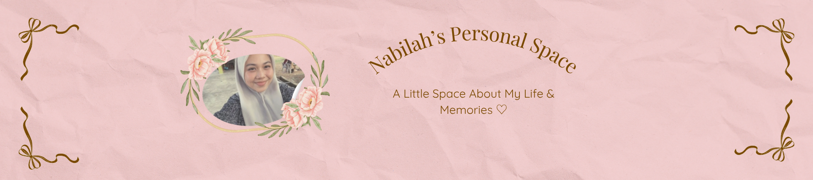
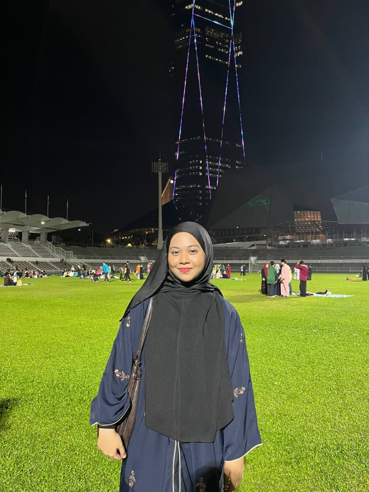

My name is Wan Nur Nabilah Insyirah Binti Wan Rozaini. I'm from Kuala Lumpur and I am currently pursuing Diploma in Library Informatics at UiTM Kedah. I am the eldest daughter in a family of five siblings. Being the oldest child has taught me to become more responsible, independent, and caring towards my family.
I am someone who enjoys learning new things, exploring creative ideas, and spending time with people who inspire me.
During my free time, I enjoy listening to music, watching movies, reading my novels, and capturing beautiful moments through photography.
I believe that every experience in life teaches us something valuable and helps us grow into a better person.
| Full Name | Wan Nur Nabilah Insyirah Binti Wan Rozaini |
| Nickname | Nab |
| Age | 20 Years Old |
| Favorite Food | Pasta and Tom Yum |
| Favorite Drinks | Buttercream Latte |
| Favorite Color | Brown |
| Favorite Movie | Midnight Runners 🎬 |
| Favorite Song | Cancer - My Chemical Romance 🎵 |
A short glimpse into the little moments that make my life meaningful and memorable.